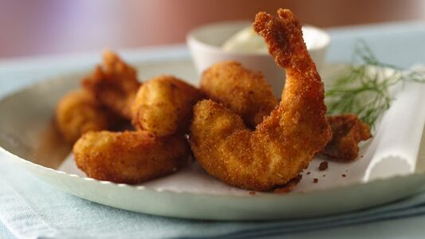

Deep Fried Shrimp

Description
This delicious recipe for deep-fried shrimp is made with a batter of eggs, flour, and baking powder. Serve with French fries.
Ingredients
- 1 ½ cups vegetable oil
- 4 pounds large shrimp - peeled and deveined
- 1 teaspoon salt
- 1 teaspoon ground black pepper
- 8 large eggs
- 1 ½ cups all-purpose flour
- 1 teaspoon baking powder
Steps
- Heat oil in a medium saucepan.
- While the oil is heating, stir shrimp, salt, and pepper together in a medium bowl. Whisk eggs, flour, and baking powder together in a shallow bowl.
- Working in small batches, dredge shrimp in egg mixture. Lower shrimp carefully into the hot oil in batches. Fry until golden, 1 to 2 minutes. Transfer to a paper towel-lined plate to drain. Repeat with remaining shrimp.